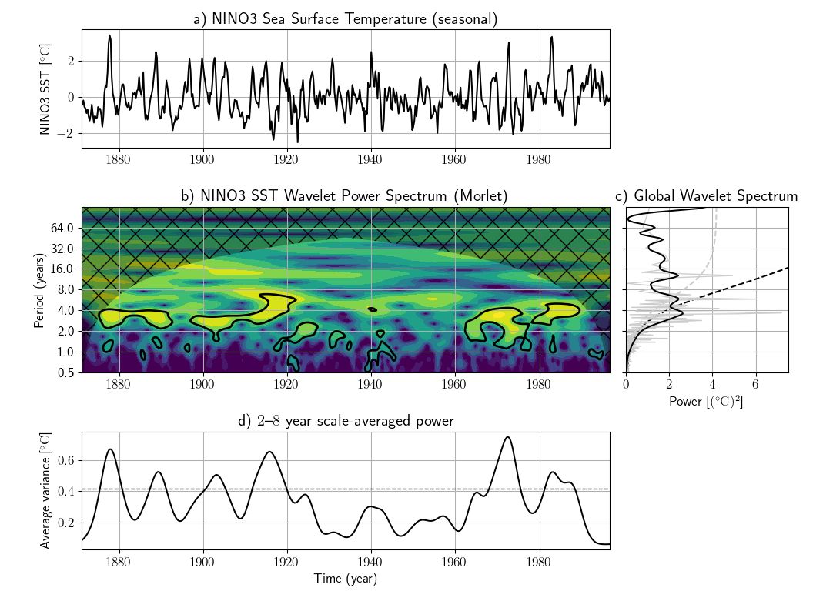

Time-series spectral analysis using wavelets
In this tutorial, we will walk through each step in order to use `pycwt' to perform the wavelet analysis of a given time-series.
In this example we will follow the approach suggested by Torrence and Compo (1998)1, using the NINO3 sea surface temperature anomaly dataset between 1871 and 1996. This and other sample data files are kindly provided by C. Torrence and G. Compo here.
We begin by importing the relevant libraries. Please make sure that PyCWT is properly installed in your system.
Then, we load the dataset and define some data related parameters. In this case, the first 19 lines of the data file contain meta-data, that we ignore, since we set them manually (i.e. title, units).
dat = numpy.genfromtxt(url, skip_header=19)
title = "NINO3 Sea Surface Temperature"
label = "NINO3 SST"
units = "degC"
t0 = 1871.0
dt = 0.25 # In years
We also create a time array in years.
We write the following code to detrend and normalize the input data by its standard deviation. Sometimes detrending is not necessary and simply removing the mean value is good enough. However, if your dataset has a well defined trend, such as the Mauna Loa CO2 dataset available in the above mentioned website, it is strongly advised to perform detrending. Here, we fit a one-degree polynomial function and then subtract it from the original data.
p = numpy.polyfit(t - t0, dat, 1)
dat_notrend = dat - numpy.polyval(p, t - t0)
std = dat_notrend.std() # Standard deviation
var = std**2 # Variance
dat_norm = dat_notrend / std # Normalized dataset
The next step is to define some parameters of our wavelet analysis. We select the mother wavelet, in this case the Morlet wavelet with \(\omega_0=6\).
mother = wavelet.Morlet(6)
s0 = 2 * dt # Starting scale, in this case 2 * 0.25 years = 6 months
dj = 1 / 12 # Twelve sub-octaves per octaves
J = 7 / dj # Seven powers of two with dj sub-octaves
alpha, _, _ = wavelet.ar1(dat) # Lag-1 autocorrelation for red noise
The following routines perform the wavelet transform and inverse wavelet transform using the parameters defined above. Since we have normalized our input time-series, we multiply the inverse transform by the standard deviation.
wave, scales, freqs, coi, fft, fftfreqs = wavelet.cwt(dat_norm, dt, dj, s0, J, mother)
iwave = wavelet.icwt(wave, scales, dt, dj, mother) * std
We calculate the normalized wavelet and Fourier power spectra, as well as the Fourier equivalent periods for each wavelet scale.
Optionally, we could also rectify the power spectrum according to the suggestions proposed by Liu et al. (2007)2
We could stop at this point and plot our results. However we are also interested in the power spectra significance test. The power is significant where the ratio power / sig95 > 1.
signif, fft_theor = wavelet.significance(
1.0, dt, scales, 0, alpha, significance_level=0.95, wavelet=mother
)
sig95 = numpy.ones([1, N]) * signif[:, None]
sig95 = power / sig95
Then, we calculate the global wavelet spectrum and determine its significance level.
glbl_power = power.mean(axis=1)
dof = N - scales # Correction for padding at edges
glbl_signif, tmp = wavelet.significance(
var, dt, scales, 1, alpha, significance_level=0.95, dof=dof, wavelet=mother
)
We also calculate the scale average between 2 years and 8 years, and its significance level.
Cdelta = mother.cdelta
scale_avg = (scales * numpy.ones((N, 1))).transpose()
scale_avg = power / scale_avg # As in Torrence and Compo (1998) equation 24
scale_avg = var * dj * dt / Cdelta * scale_avg[sel, :].sum(axis=0)
scale_avg_signif, tmp = wavelet.significance(
var,
dt,
scales,
2,
alpha,
significance_level=0.95,
dof=[scales[sel[0]], scales[sel[-1]]],
wavelet=mother,
)
Finally, we plot our results in four different subplots containing the (i) original series anomaly and the inverse wavelet transform; (ii) the wavelet power spectrum (iii) the global wavelet and Fourier spectra ; and (iv) the range averaged wavelet spectrum. In all sub-plots the significance levels are either included as dotted lines or as filled contour lines.
# Prepare the figure
pyplot.close("all")
pyplot.ioff()
figprops = dict(figsize=(11, 8), dpi=72)
fig = pyplot.figure(**figprops)
# First sub-plot, the original time series anomaly and inverse wavelet
# transform.
ax = pyplot.axes([0.1, 0.75, 0.65, 0.2])
ax.plot(t, iwave, "-", linewidth=1, color=[0.5, 0.5, 0.5])
ax.plot(t, dat, "k", linewidth=1.5)
ax.set_title("a) {}".format(title))
ax.set_ylabel(r"{} [{}]".format(label, units))
# Second sub-plot, the normalized wavelet power spectrum and significance
# level contour lines and cone of influece hatched area. Note that period
# scale is logarithmic.
bx = pyplot.axes([0.1, 0.37, 0.65, 0.28], sharex=ax)
levels = [0.0625, 0.125, 0.25, 0.5, 1, 2, 4, 8, 16]
bx.contourf(
t,
numpy.log2(period),
numpy.log2(power),
numpy.log2(levels),
extend="both",
cmap=pyplot.cm.viridis,
)
extent = [t.min(), t.max(), 0, max(period)]
bx.contour(
t, numpy.log2(period), sig95, [-99, 1], colors="k", linewidths=2, extent=extent
)
bx.fill(
numpy.concatenate([t, t[-1:] + dt, t[-1:] + dt, t[:1] - dt, t[:1] - dt]),
numpy.concatenate(
[
numpy.log2(coi),
[1e-9],
numpy.log2(period[-1:]),
numpy.log2(period[-1:]),
[1e-9],
]
),
"k",
alpha=0.3,
hatch="x",
)
bx.set_title("b) {} Wavelet Power Spectrum ({})".format(label, mother.name))
bx.set_ylabel("Period (years)")
#
Yticks = 2 ** numpy.arange(
numpy.ceil(numpy.log2(period.min())), numpy.ceil(numpy.log2(period.max()))
)
bx.set_yticks(numpy.log2(Yticks))
bx.set_yticklabels(Yticks)
# Third sub-plot, the global wavelet and Fourier power spectra and theoretical
# noise spectra. Note that period scale is logarithmic.
cx = pyplot.axes([0.77, 0.37, 0.2, 0.28], sharey=bx)
cx.plot(glbl_signif, numpy.log2(period), "k--")
cx.plot(var * fft_theor, numpy.log2(period), "--", color="#cccccc")
cx.plot(
var * fft_power, numpy.log2(1.0 / fftfreqs), "-", color="#cccccc", linewidth=1.0
)
cx.plot(var * glbl_power, numpy.log2(period), "k-", linewidth=1.5)
cx.set_title("c) Global Wavelet Spectrum")
cx.set_xlabel(r"Power [({})^2]".format(units))
cx.set_xlim([0, glbl_power.max() + var])
cx.set_ylim(numpy.log2([period.min(), period.max()]))
cx.set_yticks(numpy.log2(Yticks))
cx.set_yticklabels(Yticks)
pyplot.setp(cx.get_yticklabels(), visible=False)
# Fourth sub-plot, the scale averaged wavelet spectrum.
dx = pyplot.axes([0.1, 0.07, 0.65, 0.2], sharex=ax)
dx.axhline(scale_avg_signif, color="k", linestyle="--", linewidth=1.0)
dx.plot(t, scale_avg, "k-", linewidth=1.5)
dx.set_title("d) {}--{} year scale-averaged power".format(2, 8))
dx.set_xlabel("Time (year)")
dx.set_ylabel(r"Average variance [{}]".format(units))
ax.set_xlim([t.min(), t.max()])
pyplot.show()
Running this sequence of commands you should be able to generate the following figure:

-
Torrence, C. and Compo, G. P.. A Practical Guide to Wavelet Analysis. Bulletin of the American Meteorological Society, American Meteorological Society, 1998, 79, 61-78. DOI 10.1175/1520-0477(1998)079<0061:APGTWA>2.0.CO;2. ↩
-
Liu, Y., Liang, X. S. and Weisberg, R. H. Rectification of the bias in the wavelet power spectrum. Journal of Atmospheric and Oceanic Technology, 2007, 24, 2093-2102. DOI 10.1175/2007JTECHO511.1. ↩